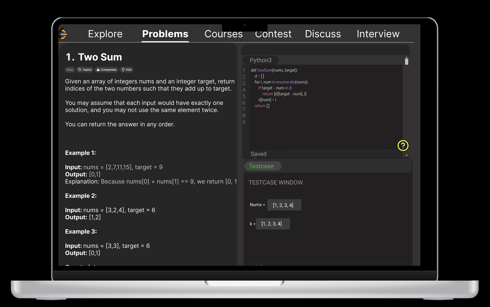
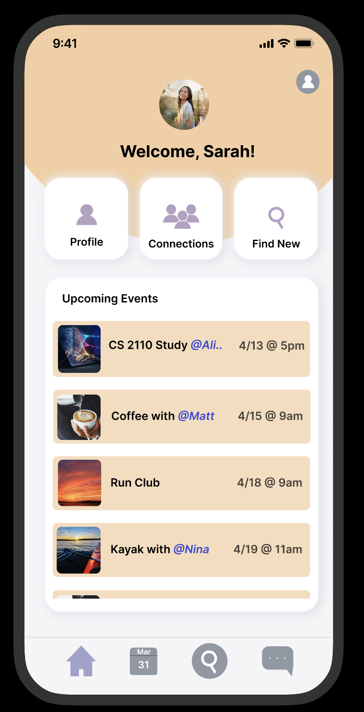
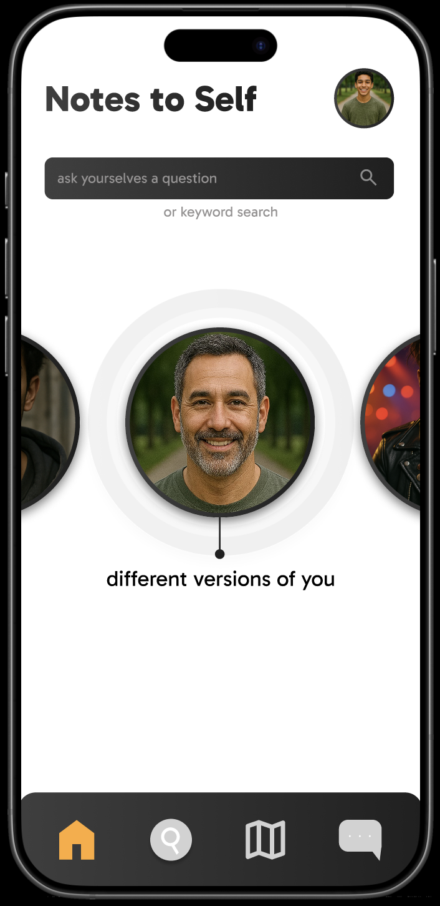

Group Project: LeetCode Visualizer Redesign
As a team, we reimagined the LeetCode experience to better support learners developing core component skills in programming. Our redesign focused on layered learning and motivation through interaction, leading to the creation of five new features:
- Progressive Learning Pathways: unlock harder problems as mastery builds
- Real-World Explanation: analogies that show relevance and deepen understanding
- Debugger Tool: real-time breakpoints and variable tracking for insight
- Brainstorm Mode: pair solving with others for shared problem solving
- AI Chatbot Help: tailored hints and step-by-step walkthroughs
In our final presentation, we walked through each feature with visuals, presented user personas, and shared a clickable prototype. Feedback praised the clarity of our user flow, the educational scaffolding built into our design, and the intuitive layout of our interface.

Final Project: Space Safari
Space Safari is a Figma-based prototype aimed at teaching young students (ages 6–10) the names, order, and facts about planets in the solar system. Designed like a game, it features orbiting planets you can tap to zoom in and read fun facts, followed by a quiz to reinforce learning.
User Testing: I conducted sessions with three participants: Jason, Adhish, and Vianne. Each tester interacted with an early version of the prototype and offered actionable feedback that helped shape the final design.
- Jason: Suggested turning the "next question" into a button, adding feedback for correct/incorrect answers, including question numbers, drag-to-planet instructions, and replacing "game mode" with difficulty levels. He also recommended adding a leaderboard.
- Adhish: Emphasized the need for incentives to keep kids engaged, prompting the inclusion of a leaderboard and scoring system.
- Vianne: Proposed adding a start page and a final results screen to create a sense of narrative flow and closure.
Prototype Evolution: The project started with paper sketches, then moved into a high-fidelity Figma prototype using Smart Animate for orbit transitions. Final updates included:
- Start and end screens
- Question feedback (right/wrong)
- Drag/swipe instructions
- Leaderboard and difficulty options
The final version reflects best practices from multimedia learning (segmenting content, visual storytelling) and child-focused interaction design (gamification, visual clarity, user agency).
GT Buddy Finder
A tool that helps Georgia Tech students organically connect through shared classes, interests, and events.
- Tiered Social Graph: shows 1st, 2nd, and 3rd-degree connections
- Smart Calendar: highlights overlapping RSVPs with friends
- Privacy Controls: choose visibility per interest or event
- Designed to reduce social anxiety through passive discovery

Notes to Self
A speculative app that lets users send emotional notes across alternate timelines to different versions of themselves. It explores:
- Identity and self-reflection
- Decision-making under uncertainty
- Speculative interaction design
